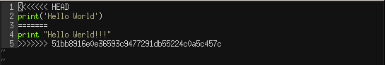

An Introductory Workshop to GitLab
What you will learn
What is git and GitLab
How to use GitLab in science
How to use GitLab in collaborations
How use GitLab for project documentation
What is GitLab
The Basics
GitLab is a implementation of the tool git. It combines version control, data synchronization, and collaborations on projects for single users and teams.
The GitLab implementation is a private environment. Only users with access rights can view and edit files.
Why should I use GitLab
No more version issues.
All edits to a file are saved in the history
Project.py
Why should I use GitLab
No more overwritten or deleted files.
Easy error-tracking and versatile step-back functionality.
Why should I use GitLab
No more lost users.
A wiki for Project documentation and communication channels with users.
How it works
A new project
has been created in the GitLab
Cloning
Cloning creates a local copy of the project
on the machine of the user
Editing
Edits on the local copy
of the project can be made
Pushing
The edits can be pushed
to the project in the GitLab
Pulling
Other users can pull the new edits
to their local copy of the project
More Editing
All users can apply their edits
in their local copies of the projects
Merging
Multiple edits of one project
can be merged into a new version
Versioning
All edits to the projects
are available in the project history
Back to top
How to clone and pull a GitLab project
Overview
The most basic operation. If you want to use a code or project that has been distributed in the GitLab, you want to make a local copy on your machine (cloning) or want to get the latest updates to this project (pulling)
Get access to the GitLab
Use cd ~/.ssh to navigate to the hidden ssh directory in your home directory
Get access to the GitLab
Generate a key pair with ssh-keygen. Enter a filename (e.g. "github"). Optionally enter a passphrase.
Get access to the GitLab
Use cat to open the public key of your pair. It has the ending ".pub" (e.g. github.pub). Copy everything.
Get access to the GitLab
In GitLab go to the preferences page of your account. Under "SSH Keys" paste the content of the public key, give it a name and add the key.
Clone the project
Get the ssh link to the project (remote repository) you want to clone

Open your console and use cd to navigate to the path were you want to create your local repository
git clone to create a local repository
git clone git@github.com:felix-eckel/git-intro.git
You now have a local copy of the project on your machine (local repository)
In the meantime, an update has been made on the local repository
Let's pull it!
git pull to get the latest changes in the remote repository
git pull
Back to top
How to create a GitLab project
Overview
Distribute code yourself. If you want to share projects or code with others or just want to profit from the advantages of GitLab you need your own project
Go to the group in the GitLab group where you want to create your project.
Go to the group in the GitLab group where you want to create your project.
Choose New project
Select Create blank project
Almost there!
Almost there!
Give your project a meaningful name
Almost there!
Give your project a very brief description
Almost there!
Make sure to activate the creation of a README file
Almost there!
Select Create project
A remote repository has been created in the GitLab
Now, lets clone it to a local repository
You already know how this works
Back to top
How to make edits and commits to a GitLab project
Overview
Develop your project. Create new files, edit existing files and test your code. Then, you add your changes to a commit and push this commit to the remote repository
What is a commit?
Imagine the commit as a parcel that sends your edits to the remote repository
What is a commit?
The local repository contains some files
What is a commit?
Files are edited
new files are created
What is a commit?
Changes are added to the "commit-parcel"
What is a commit?
changes
The commit closes the parcel
and labels what is inside
What is a commit?
With push the commit-parcel is sent on its way to the remote repository
Use cd to naviagte to your newly created and cloned project on your machine
Use the nano editor to write something into the readme file
nano README.mdSave the changes with CTRL/CMD + O
Confirm with ENTER
Close nano with CTRL/CMD + X
Create a new file using nano
nano myfile.txtSave and exit nano just like in the previous step
Save the changes with CTRL/CMD + O
Confirm with ENTER
Close nano with CTRL/CMD + X
Add the recent changes to the next commit
git add -A
With the -A option, all edits are added at once
Often, you do not want all files to go into the remote repository. For example, files with sensitive information, temporary files or image files.
These files can be specified in a .gitignore file
Create a .gitignore file using nano
nano .gitignore
Add exceptions for .png files and temporary files
Save and exit the .gitignore file
Save the changes with CTRL/CMD + O
Confirm with ENTER
Close nano with CTRL/CMD + X
Add the .gitignore file to the commit
git add .gitignore
git commit -m "new file and readme"
The -m is necessary. Here, we give a short description of the commit
Meaningful messages are for example
"Feature XY implemented" or "Error 251 fixed"
In a real scenario always make sure you got all recent changes made by your collaborateurs to the project before you push your own changes
Do so by pulling the project
git pull
Of course, here this is optional
You still should make it a habit to always pull before you push
If your local repository is on the newest stand, push your commit
git push
You can push multiple commits at once
Merge conflicts
A merge conflict is what happens if two contradicting edits exist in two repositories

We have to manually tell git which edit is the one to go for
Merge conflict

A merge conflict is only issued, if two different edits to the same line exist
Merge conflict
Use a text editor to open the text files for which the conflict was raised. For each line or block of lines that has an unresolved conflict, both versions are indicated. Manually delete all the lines you wish to discard and save the file.
Merge conflict
Add the resolved files to a new commit and push the commit to the remote repository. The merge conflict should now be resolved.
Further git commands
log displays the history of all commits in the repository. Each commit can be identified by its commit hash.
git log
Further git commands
status displays the status of all files that have been modified
git status
Further git commands
checkout rolls back to a previous commit by using the commit hash which is listed by the log command
git checkout 4349c53
Back to top
How to work with branches
Overview
Extend your project. Once you have developed a stable program you do not want to damage your code by developing experimental features.
With branches you can implement a new feature on a branch (i.e. a copy) of your project and test it thoroughly.
Stable program
A program in which to implement a new feature
Creating a branch
A branch works like a copy of the project
Making edits
A new feature is implemented and thoroughly tested
Mergin branches
Once everything works the changes are merged into the main branch
Create a new branch in your local repository and give it a name
git checkout -b "name"
This creates a copy from your current branch and changes into that branch
Push your newly created branch into the remote repository
git push origin "name"
When you want to push edits into your new branch you have to set the so-called upstream branch
git push --set-upstream origin "name"
You only need to do this with the first push, every other push works as usual
git push
Make a change to your file using nano
Open the file in nano with
nano "filename"Save the changes with CTRL/CMD + O
Confirm with ENTER
Close nano with CTRL/CMD + X
Push it into the remote branch
git add -A
git commit -m "a small edit"
git pull
git push
Back to top
How to merge branches
Overview
Distribute your update. Once you have enhanced your program in a seperate branch, merge it into your main branch so other users can profit from the latest update.
Change into the branch you want to merge into
Use checkout to do so
git checkout master
Use merge to merge a different branch
git merge "name"
You might now want to delete your temporary branch
git branch -d "name"
Back to top
How to manage a project in a group
Overview
Work together. With gitlab you can track issues, request to merge your contributions to the project or manage user roles in your project.
Issue tracking
You found a bug or issue in a project or have suggestions on how to improve the project?
Submit an issue to let the developer(s) know
Create an issue with New Issue and fill out the form.
Be as specific as possible when describing the issue.
You can assign a specific developer who will be notified of your issue.
Merge request
You have made edits to a project in a branch?
Let the developer(s) know so they can merge it.
Create a request New Merge Request and select the source and target branch
Inivte others
You can invite other users via the Members tab in the Project Information
Search for users or enter their e-mail. You can choose a user role.
Optionally you can specify an expiry date to which access is permitted.
User roles
Access rights
- Guest:
- Reporter
- Developer
- Maintainer
- Owner
Dokumenting a project
You can write an extensive documentation of your project in the project-wiki.
Back to top
More useful stuff
There is more...
...to git and gitlab than ever could fit into a introductory tutorial.
Here are some mentionings of useful topics
I want to delete a project!
Only users with Owner rights can delete projects
I have pushed sensitive data into the repository
Even if you delete the sensitive information in the next commit, the information is still available in the history log. Ask a user with Owner rights for help.
Better: make sure to not commit sensitive data. If your project contains files with sensitive data use the .gitignore file to exclude them from commits.
How can I do XY?
Try to google your question. git is being used by millions of users. In most cases, your question has already been asked and answered.
Read the error message. Often, git displays an error message telling you what command to use to avoid the error.
I want more
Here is some more literature
This presentation is powered by